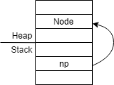

CS 246 - Object-Oriented Development |
|
| Instructor: | Brad Lushman |
|---|---|
| Office: | DC3110 |
| Email: | brad.lushman@uwaterloo.ca |
| Website: | https://www.student.cs.uwaterloo.ca/~cs246/ |
| Note: | All program codes below are provided by Prof. Lushman during class. |
Recall out first C program in CS136 - helloWorld.c:
#include <stdio.h>
int main () {
printf(“Hello, World!\n”);
return 0;
}
Here is the C++ version:
#include <iostream>
using namespace std;
int main () {
cout << "Hello world" << endl;
return 0;
}
Note that the main function must be return the type int in C++.
The stdio.h and printf are still available in C++.
But of course, we should always use C++ I/O where we are coding with C++.
The header for C++ I/O is iostream.
The output format is std::cout << (data) << ... << (data) << std::endl.
std::endl means "end of line"; it is same as \n in C.
If we add using namespace std; after iostream, then we can omit std::.
To compiling C++ programs, type g++ -std=c++14 -Wall helloWorld.cc -o helloWorld or g++14 helloWorld.cc -o helloWorld.
-o hello: name of execute binary (default as a.out)
Once you compile the program, then type ./helloWorld.
Again, C programs work in C++.
Input/Output
There are three types of I/O streams:
cout: for printing to stdOut (standard output)cin : for reading from stdIn (standard Input)cerr: for printing to stdErr (standard Error)I/O Operators in C++:
<<: "put to" (output)>>: "get from" (input)cerr >> x and cerr << x: operatore "points" in the direction of information flowExample: Add 2 numbers:
#include <iostream>
using namespace std;
// We will omit the above lines for now on (understood)
int main () {
int x, y;
cin >> x >> y;// ignore whitespace
cout << x + y << endl;
}
In line 8, the program will get two integers from StdIn and skipping whitespace.
What if input does not contain an integer next?
cin.fail () will be true.cin.eof () and cin.fail () will be true, but not until the attempted read fails!#include <iostream>
using namespace std;
int main () {
int i;
while (true) {
cin >> i;
if (cin.fail()) break;
cout << i << endl;
}
}
Note: then there is am implicit conversion from cin to bool.
Let cin be used as a condition: true for success and false for failure.
Then... Here is the v2.0 for our example:
#include <iostream>
using namespace std;
int main () {
int i;
while (true) {
cin >> i;
if (!cin) break;
cout << i << endl;
}
}
Note that >> is the right bitshift operator in C.
a >> b means shifts a's bits to the right by b spots.
For example: 21 >> 3
Since 21=101012, we get 21 >> 3 = 102 = 2.
But when the left hand side is cin, >> is the "get from" operator.
Operator >> inputs:
cin (type istream)cin in back (istream).
This is why we can write cin >> x >> y >> z;.#include <iostream>
using namespace std;
int main () {
int i;
while (true) {
if (!(cin >> i)) break;
cout << i << endl;
}
}
Lastly, V4.0 for our example:
#include <iostream>
using namespace std;
int main () {
int i;
while (true) {
if (cin >> i) break;
cout << i << endl;
}
}
Example: Read all integers and echo to stdOut until EOF; skip non-integer input.
#include <iostream>
using namespace std;
int main () {
int i;
while (true) {
if (!(cin >> i)) {
if (cin.eof()) break;
cin.clear (); // reset the fail flag
cin.ignore (); // skip a char
} else { // read was ok
cout << i << endl;
}
}
}
Reading String
type std::string (#include <string>): More details later.
#include <iostream>
#include <string>
using namespace std;
int main () {
string s;
cin >> s;
cout << s << endl;
}
Line 7 will read a string, it skips leading whitespace and stops at whitespace (read one word only).
What if we want the whitespace?
Use getline (cin, s).
It will read from current position to text newline into s.
Recall cout << 95 << endl; this will print out 95.
What if we want to print a number in hexadecimal?
Do cout << hex << 95 << end;; this will prints out 5f.
The hex is an I/O manipulator. After use it, all subsequent integers print in hexadecimal forever.
To reset to decimal, use cout << dec.
For other manipulators, check #include <iomanip>.
Stream abstraction applies to other sources of data.
File - read from a file instead of cin.
Using std::ifstream to read from a file and using std::ofstream wrtie to a file.
File access in C:
#include <stdio.h>
int main() {
char s[256];
FILE *f = fopen (“suite.txt”, “r”);
while (ture) {
fscanf (f, “%255 s”, s);
if (feof(f)) break:
printf(“%s\n”, s);
}
fclose (f);
}
Here is the C++ version:
#include <iostream>
#include <fstream>
#include <string>
using namespace std;
int main() {
ifstream f {“suite.txt”}; // defining an ifstream opens the file
string s;
while (f >> s) {
cout << s << endl;
}
// file is closed when the variable f goes out of scope
}
Anything you can do with cin/ cout, you can do with an ifstream / ofstream.
String Example: Attach a stream to a string variable and read from/write to the string.
std::istringstream: read from a stringstd::ostringstream: write to a string#include <iostream>
#include <string>
#include <sstream>
int main () {
int hi = 100;
int lo = 1;
ostringstream oss;
oss << “Enter a number between “ << lo << “ and “ << hi;
string s = oss.str();
cout << s << endl;
}
Example: convert string to number.
#include <iostream>
#include <string>
#include <sstream>
int main () {
int n;
while (true) {
cout << "Enter a number" << endl;
string s;
cin >> s;
istringstream iss{s};
if (iss >> n) break;
cout << "I said, ";
}
cout << "You entered " << n << endl;
}
Example Revisited: Echo all numbers, skip non-numbers.
#include <iostream>
#include <string>
#include <sstream>
int main () {
string s;
while (cin >> s) {
istringstream iss{s};
int n;
if (iss >> n) cout << n << endl;
} // end while
} // end main
Strings
In C...
(char* or char[]), terminated by \0\0 and corrupt memorystring s = "Hello";s is the C++ string, creater from the C string."Hello" is the C-style string (char array) [H][e][l][l][o][\0]String Operations
s1 == s2;s1 != s2;s1 <= s2;slength();s[0] s[1] s[2] etc...s3 = s1 + s2; s3 += s4;Default Function Parameters:
#include <iostream>
#include <fstream>
using namespace std;
void printSuiteFile(string name = "suite.txt") {
ifstream f{name};
string s;
while (f >> s) cout << s << endl;
} // end printSuiteFile()
int main() {
printSuiteFile("suite2.txt");
printSuiteFile();
} // end main()
Note: Optional parameters must be LAST.
In C, we do...
int negInt(int n) {return -n;}
bool negBool(bool b) {return !b;}
In C++, we do...
int neg(int n) {return -n;}
bool neg(bool b) {return !b;}
These two functions called overloading.
Compiler uses number and types of arguments to decide which neg() is being called. - overload resolution
Overloads must differ in number or types of arguments - may not differ on just return type.
We've seen this already: << and >> are overloaded.
The behaviour depends on types of arguments.
struct Node {
int data;
Node* next;
}; // don't forget the semicolon
const int maxGrade = 100; // must be initialled
Declare as many things const as you can - it helps catch erros!
Node n1 = {5, nullptr};
// use nullptr, no NOT use NULL or 0 in this class
const Node n2 = n1;
// immutable copy of n1 (n1 can change, but n2 not)
const Node *pn = &n1;
// it can reassign n1 data, but it cannot reassign pn->data
Node *pn2 = &n2;
// this does NOT work!
You can have constant pointer to non-constant.
But you CANNOT have non-constant pointer to const.
Recall:
void inc(int n) {n = n + 1;}
...
int x = 5;
inc(x);
cout << x; // we will get 5, not 6 here! Why?
Pass-by-value
The function inc() gets a copy of x, the original unchanged.
Solution: If a function needs to modify a parameter - pass a pointer.
void inc(int *n) {*n = *n + 1;}
...
int x = 5;
inc(&x);
cout << x; // now, we will get 6 here
Why cin >> x but not cin >> (&x)?
C++ has another pointer-like type: references!
int y = 10; int &z = y;
z is a lvalue reference to integer (to y).
Reference is like a constant pointer.
It is similar to int* const z = &y;
References are like constant pointers with automatic dereferencing.
z = 12; // NOT *z = 12; // now y = 12 int *p = &z; // &z gives the address of y
In all cases, z behaves exactly like y.
z is an alias ("another name") for y.
Things you can't do with lvalue references:
int &x; // can't do this!
int &x = 3; // can't do this!
int &x = y + z; // can't do this!
int &x = y; // you are fine.
int &*x = ...; // do NOT do this!int *&x = ...; // this is fine ._.
int &&r = ...;
int &r[3] = {..., ..., ...}; // can't do this!
What can you do??? Pass as function parameters!
void inc (int &n) {
n = n + 1;
}
The &n here is the constant pointer to the argument(*), so changes to n affect x.
Note that n = n + 1; is no pointer dereference.
... int x = 5; inc(x); cout >> x; // you will get 6 here
Why does cin >> x work?
It takes x by reference.
Example:
istream &operator>> (istream &in, int &x);
Example: int f (int n) {...} copy the argument
If the argument is big, copy is expensive.
Example:
struct ReallyBig {...};
int f(ReallyBig rb) {...}; // this is slow
int g(reallyBig &rb) {...} // alias-fast, but could change rb in the caller
int h(const ReallyBig &rb) {...} // fast, no copy, parameter will not change
Advice:
Prefer pass-by-const-value over pass-by-value for anything larger than a pointer, unless the function needs to make a copy anyway, then use pass-by-value.
Also:
int f(int &n) {...}
int g(const int &n) {...}
f(5);
g(5);
For line 3...
You can't do this! You can't initialize an lvalue reference (n) to a literal value. If n change, it can't change the literal 5.
For line 4...
This is okay. Since n can never be changed, compiler allows this.
How? Compiler creates a temporary location in memory to hold the 5. Hence, the reference n has something to point at.
In C...
int *p = malloc(... * sizeof(int)); ... free(p);
Good news: do NOT use these in C++!
Bad news: C++ has it own way to do it...
The keywords are new and delete.
// type-aware, less error-prone
struct Node {
int data;
Node *next;
};
Node *np = new Node;
...
delete np;

All local variables reside on the heap.
Variables deallocated when they go out of scope (stack is popped).
Allocated memory resides on the heap.
Remains allocated until delete is called.
If you don't delete all allocated memory... Memory Leak!!!
The program will eventually fail and this is incorrect behaviour.
Example:
Node getMeANode () {
Node n;
return n;
}
This is expensive.
n is copied to caller's stack frame on return.
How about return a pointer (or reference) instead?
Node &getMeANode () {
Node n;
return n;
}
It's fast, but... This is DANGEROUS! You should NOT do it.
It will return a reference to stack, allocated data, which is dead on return.
Hence, do NOT return a pointer to a location data.
Node *getMeANode () {
return new Node;
}
This is fast and safe.
It returns a pointer to the heap. (The pointer is still alive!)
But don't forget to delete it when done!
Give meaning to C++ operators for new types.
Example:
struct Vec {
int x, y;
}
>Vec operator+(const Vec &v1, const Vec &v2) {
Vec v{v1.x + v2.x, v1.y + v2.y};
}
Vec operator*(const int k, const Vec &v1) {
return {k * v1.x, k * v1.y};
}
The operator* is okay because the compiler knows it's creating a Vec, based on the return type.
// Another version
Vec operator*(const Vec &v1, const int k) {
return k * v1;
}
struct Grade {
int theGrade;
};
ostream &operator<< (ostream &out, const Grade &g) {
out << g.theGrade << '%';
return out;
}
| ← Go to Module 1 - The Shell | ↑ Go to Index | → Go to Module 3 - C++ (Part 2) and Introduction to OOP |
Find a typo or mistake? Feel free to contact me and I will correct it as soon as possible.